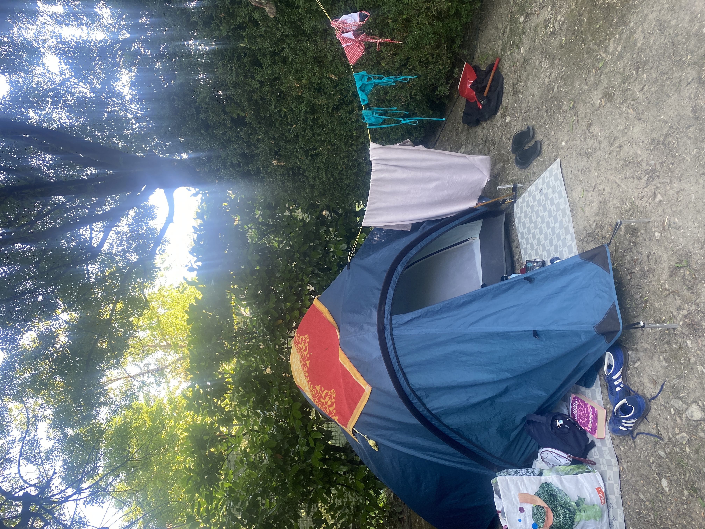
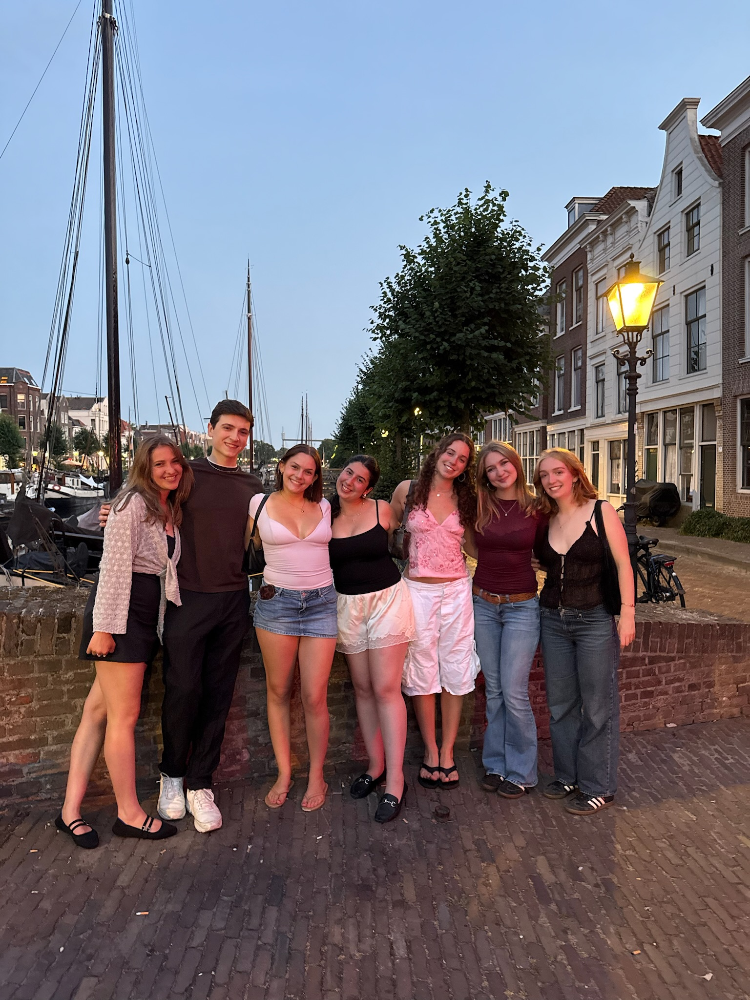
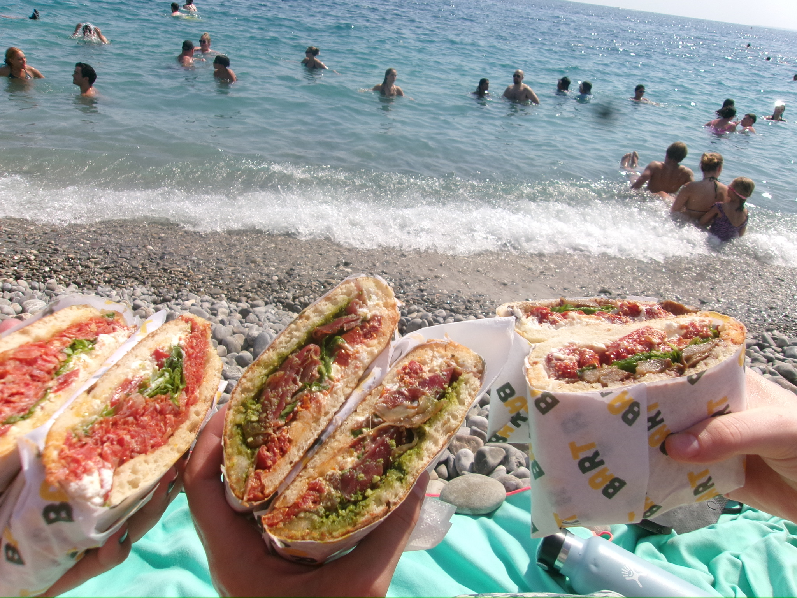

I spent about two weeks in Europe on each side of my Dialogue. Before the Dialogue, I spent most of
that time road-tripping in Italy with my host sister. We camped along the way and drove over 2,000 km
(well, she drove, because I don't have an international driver's license or know how to drive stick).
We planned our route as we went, deciding where to go based on camping spots. We traveled all over
Northern Italy, visiting both major cities like Florence and tiny towns like Pennabilli. This was my favorite
trip of my whole life, and I am so lucky to have gotten to do it with my best friend. We also stayed in Germany
before and after the 10-day trip, where I got to spend time with the rest of my host family and my friends there.
It was a dream, and even more fun because of the World Cup! I even got to attend a public viewing for Germany vs. Paraguay.

After these amazing two weeks, I traveled by FlixBus (if you know, you know) from Gießen, where my host family
lives, to Rotterdam. The coursework was a mix of lectures, group and individual assignments, and site visits.
One of my best friends was on the same program, and in no time, we formed a
group of eight who did everything together during the Dialogue. We cooked, did our readings for class, and
traveled together on free days. During the Dialogue, we visited so many new places:
Amsterdam, Delft, Utrecht, Brussels, and Antwerp, just to name a few. Some of our site visits included
the International Court of Justice, Rotterdam's city hall, and local organizations in Rotterdam that help migrants.
I learned so much about Dutch politics and migration within Europe.

On August 4th, the Dialogue ended, and my two friends and I bid the rest of our group adieu and got on a Eurostar
train to Paris. After climbing a seemingly impossible staircase with our giant suitcases to reach our Airbnb, we
stayed in Paris for five days, one of which was my 21st birthday! Paris is my favorite city in the world, and
this was my third time visiting, so I felt so happy to spend my 21st birthday there. From Paris, we took the train to Nice.
It was the perfect way to recharge, spending time on the beach after bustling Paris. After three days, we flew to Madrid,
where it was 100 degrees every single day, but we enjoyed 1-euro tacos, thrifting, and exploring the beautiful city anyway.
After Madrid, we flew to our last destination: Lisbon. We met a lot of people through our hostel and learned a lot about the city
on a guided tour. After this, we all parted ways. Because of a last-minute flight change, I flew to London and then Iceland, where I
had a 17-hour layover. I chose to leave the airport, which I think was the right decision, since it let me explore
Reykjavík for a few hours before my final flight back to Boston.
Hover over a country to see how many days I spent there.